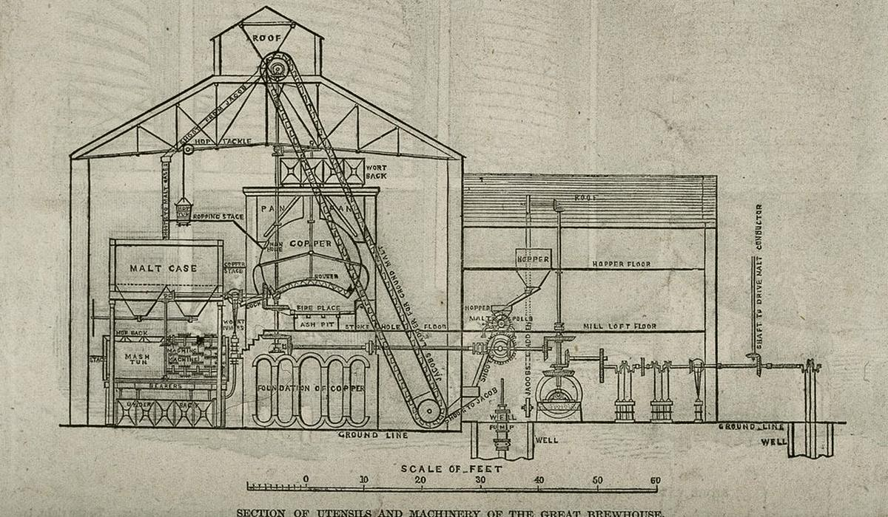
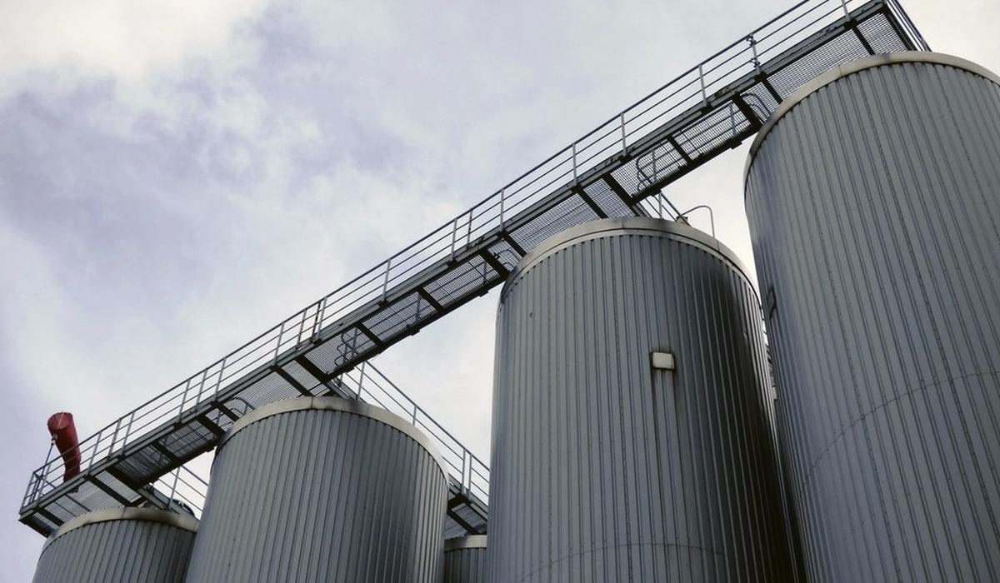

How to tell whether your ammonia plant is getting worse
The refrigeration plant is usually the biggest electrical load on site and nobody looks at it until a fermenter will not crash. One number, read properly, tells you whether it is slipping.

Why the question is worth asking
Ask a plant engineer whether the ammonia plant is getting worse and you will get a story about the compressor that tripped last March. Ask for the number and there usually is not one. The electricity bill rises, the summer feels harder, a fermenter takes six hours longer to crash than it used to. Each of those is a symptom. None of them is a measurement.
The compressors use most of the refrigeration plant's energy. In a brewery that runs fermentation, maturation, bright beer and a cold store, the plant is often the largest single electrical consumer. A plant that slides slowly costs money every hour it runs. It also fails you at the worst moment, on the hottest afternoon with three tanks waiting to crash.
The number: coefficient of performance
The measure is the coefficient of performance (COP): cooling delivered divided by the power you paid for to deliver it. On paper an ammonia plant at minus 15 °C evaporating and plus 30 °C condensing has a theoretical COP of about 4.66. Real compressors lose a lot to mechanical and gas friction, so the practical figure for the same conditions is closer to 3.4. Typical real plants sit between 3 and 5.
Q (kW) = glycol mass flow (kg/s) x Cp (kJ/kg K) x (return temp - flow temp) (K)Use the Cp from the supplier data sheet for your glycol strength, not the value for water.
COP = Q (kW) / compressor electrical input (kW)You need three signals you probably already have: glycol flow, flow and return temperatures on the main header plus the compressor power, ideally from a dedicated meter on the motor control centre. Log them at one-minute resolution and average over an hour. Shorter windows chase compressor loading steps; longer ones hide the night.
A worked example
Say the plant pushes 40 m³/h of glycol at 1,030 kg/m³ with a Cp of 3.7 kJ/kg K and a 4 K rise across the load. That is 11.44 kg/s, so the cooling delivered is 11.44 x 3.7 x 4 = 169.4 kW. If the compressors draw 50 kW in that hour, COP is 3.39. Healthy, for a plant condensing around 30 °C.
Now suppose a year later, same season, same condenser temperature, the plant still delivers about 170 kW but COP has drifted to 3.0. Power goes from 50.0 kW to 56.7 kW. Run that for 20 hours a day over a year and it is roughly 48,700 kWh of extra electricity. At a tariff of, say, INR 9 per kWh that is about INR 438,000, for the same beer cooled to the same temperature.
| Condition | Cooling (kW) | Power (kW) | COP |
|---|---|---|---|
| Last year | 170 | 50.0 | 3.4 |
| This year | 170 | 56.7 | 3.0 |
The traps that make the number lie
COP is honest only if you compare like with like. The IBD's word for it is stretch: the gap between condenser and evaporator conditions. Lower the condenser pressure or raise the evaporator pressure and performance improves; widen the gap and it falls. A plant that looks worse in May may simply be condensing on hotter air. So bin your hourly COP by condenser and evaporator temperature, then compare the same bins year on year.
- Parasitic loads. Every kW of glycol pumping and cold-room fan heat ends up back on the cold side. At a COP of 3, each unnecessary kW of pumping costs about 1.33 kW. At weekends these loads can be almost the whole refrigeration demand, which makes weekend COP look dreadful for reasons that have nothing to do with the compressors.
- An evaporator set colder than it needs to be. The IBD cites a plant evaporating at minus 25 °C to make minus 18 °C secondary refrigerant, where raising the evaporator to minus 5 °C would have doubled the refrigeration available and made it 30 percent cheaper. Check the setpoint against what the coldest user actually needs.
- Sensors nobody calibrated. A 0.2 K error on a 4 K glycol delta is a 5 percent error on Q. Check the two temperature probes against each other with the plant idle and the loop circulating.
- Heat in the wrong place. Condenser fouling, non-condensable gas and oil logging in the evaporator all push COP down slowly. They show up as a creeping condenser approach or falling suction pressure long before anyone feels it in a tank.
What good looks like
Good is a weekly chart of COP per stretch band with last year's line behind it, plus the parasitic load at weekends shown separately. When a band drops by more than its normal scatter, someone checks the condenser before the summer, not during it. The model sees the number. The engineer still has to go and listen to the compressor.
Beer365 holds the glycol, temperature and power readings in one record and answers this question from your own meters, with every figure traceable to the hour it came from.
Part of the Beer365 solution for energy, utilities and plant.

Written by Ankur Napa
R&D brewer at United Breweries, SABMiller and AB InBev, then a data scientist on AI and generative AI for AB InBev's global business units. MSc Brewing Science and Technology, MSc Data Science and AI, Microsoft Certified Fabric Analytics Engineer. He leads Beer365 at Disruptive Advantage.
Keep reading
More on energy, utilities and plant

Energy, utilities and plantAre your spent grain, trub and yeast worth more than you are paid for them?
By-products leave the brewery by the truckload and are priced by habit. A mass balance and a price per tonne of dry matter show whether the contract still makes sense.
Energy, utilities and plantWhich CIP set or hose is losing the water? Map it meter by meter
Water to beer ratio tells you the site is thirsty. It does not tell you where. Area meters, CIP records and a night flow test usually do.
Energy, utilities and plantWhich brewery loads can you actually move off the peak tariff?
Time-of-day tariffs reward breweries that shift load. The bill does not tell you which loads are movable. The interval meter data and the brewing schedule do.
Bring one week of brew sheets
We will show you where the beer went, on a call, before anyone signs anything.